Find the Right Organic Nutrition for Your Crops
Every crop has different nutrient requirements. Explore organic manure and fertilizer options suitable for your cultivation type.
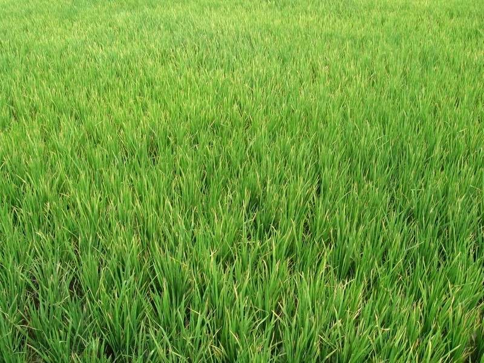
1. Rice / Paddy
Supports flooded soil microbial health, root anchorage, and prevents nitrogen leaching with cured organic matter.
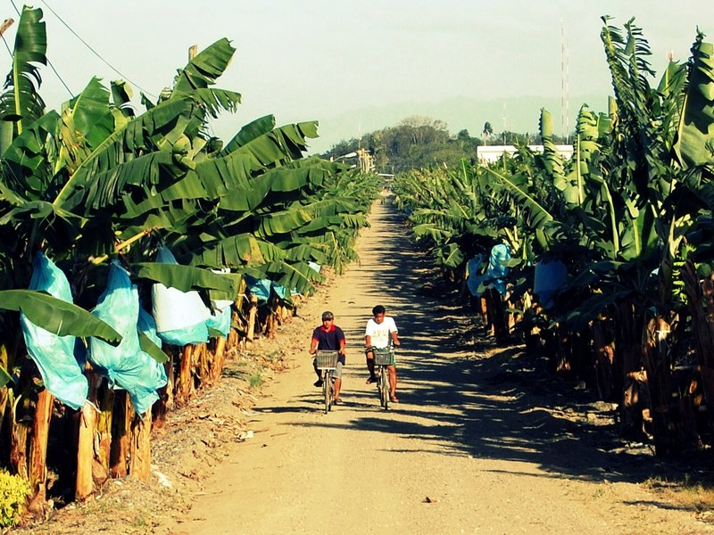
2. Banana
Demands massive organic potassium and nitrogen for pseudostem girth, leaf health, and heavy fruit bunch emergence.
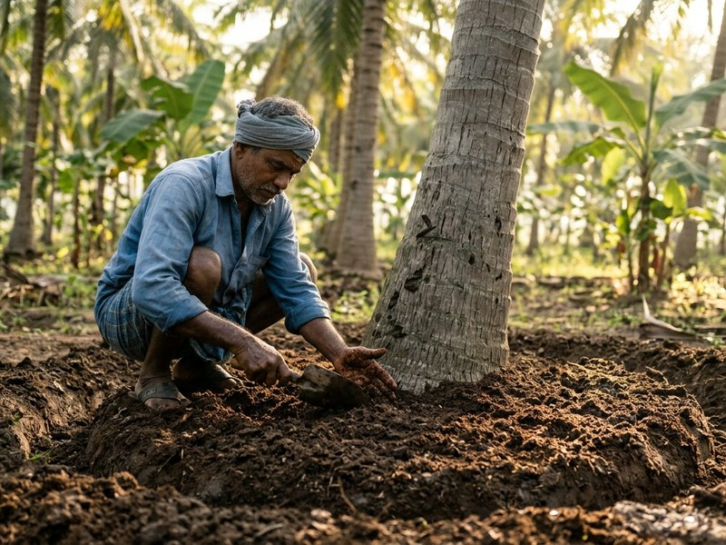
3. Coconut
Circular ring application preserves root moisture during droughts, curbs button shedding, and maximizes copra oil quality.
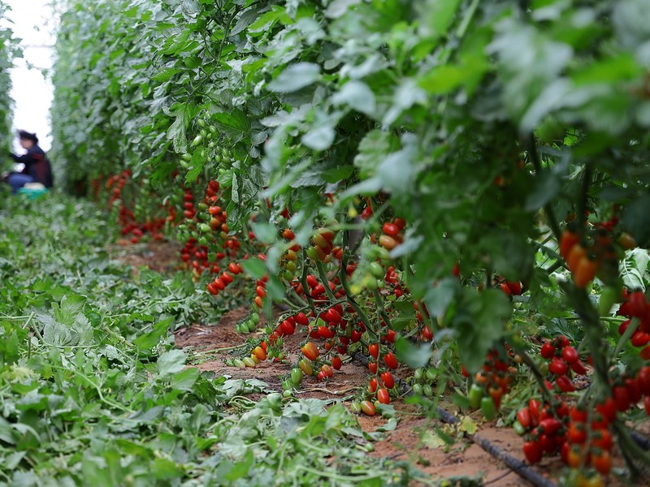
4. Vegetables
Targeted nutrition for tomatoes, chilis, brinjal, and greens to stimulate active rooting, early flowering, and pest defense.
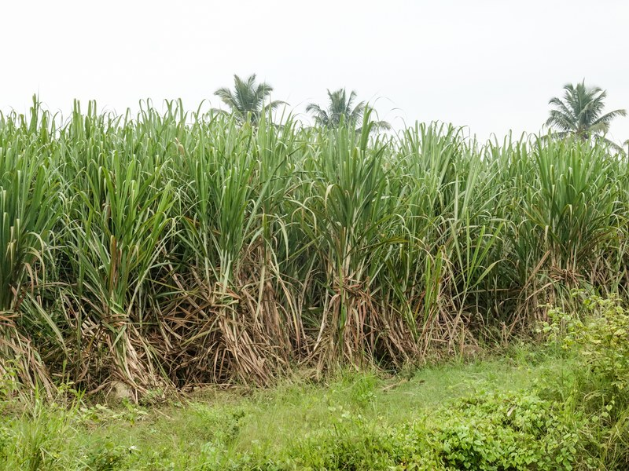
5. Sugarcane
Enriched biological organic carbon promotes robust tillering, cane thickness, internodal height, and superior brix content.
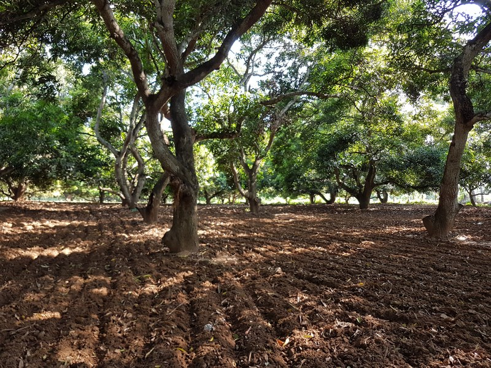
6. Fruits & Orchards
Long-term living soil feeding for mango, citrus, guava, and pomegranate, ensuring uniform fruit sizing and sweetness.
Apply Organic Fertilizers the Right Way
Understand how to apply organic manure and soil amendments effectively according to crop requirements and cultivation practices.
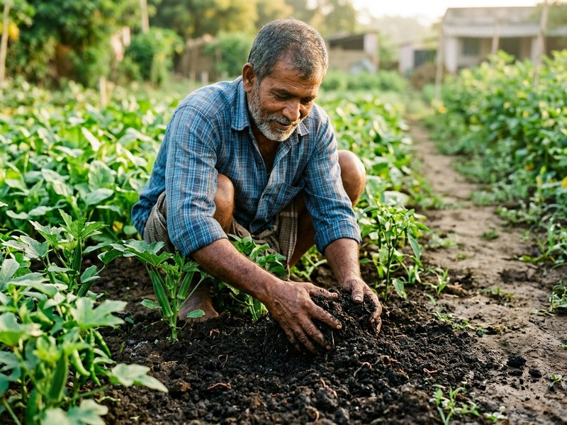
Basal Application
Prepare soil with aged organic manure before planting.
Broadcast aged farmyard manure or cow dung compost across the plot 15 to 20 days prior to final harrowing. Incorporating organic matter into the top 15–20 cm builds water retention, aeration, and vital mycorrhizal networks for newly developing roots.
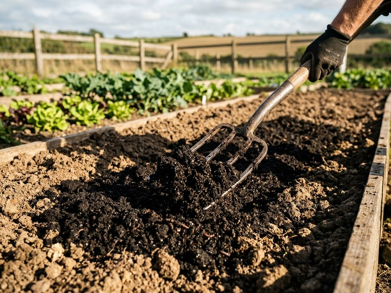
Soil Application
Apply suitable compost around crop root zones following recommended practices.
Apply enriched vermicompost in continuous bands along planting furrows or circular rings 15 cm from crop stems. Light earthing-up and moisture management ensure earthworm castings and humic substances dissolve directly into active feeder roots.
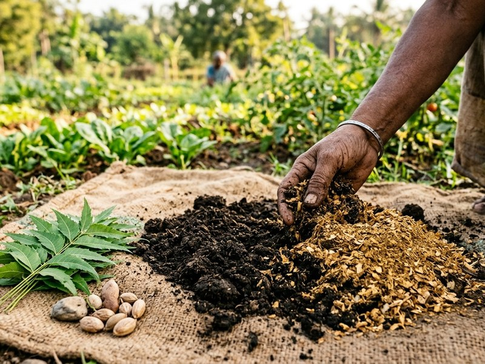
Nutrient Management
Follow crop-specific recommendations and soil testing.
Integrate organic neem cake alongside microbial compost. The natural triterpenoids in neem cake shield delicate crop root hairs from soil pathogens and nematodes, while naturally retarding nitrogen loss for sustained seasonal feeding.
Calculate Your Seasonal Organic Fertilizer Requirements
Select your crop variety and cultivated acreage to estimate the quantities of organic manure, enriched vermicompost, and neem cake required for your farm.
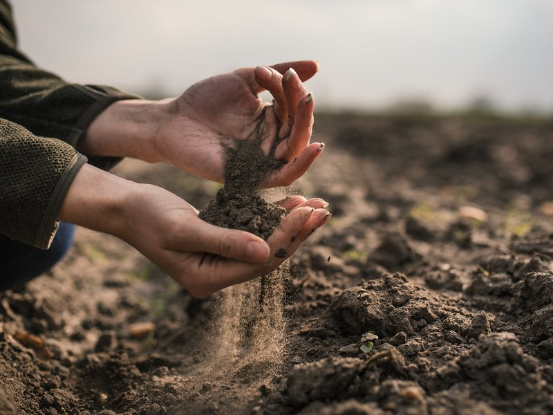
Agronomist-Verified Ratios
Formulated for Indian agro-climatic conditionsOur organic formulations maintain a biologically balanced C:N ratio (< 20:1) to prevent nitrogen lock-up and ensure uninterrupted vegetative vigor and soil humus build-up.
Plan Your Organic Farming Season
Understand the important stages of crop cultivation and plan organic soil preparation and nutrient management at the right time.
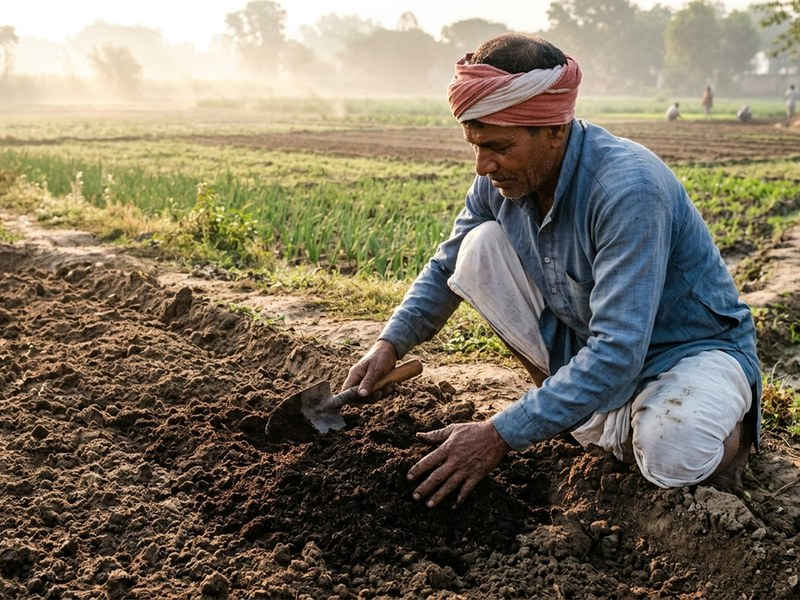
1. Before Planting
Soil preparation and organic manure incorporation.
Plow deeply with aged cattle manure 3 weeks prior to sowing. Recharges aerobic microflora, aerates compacted soil, and raises basal moisture storage.
2. Early Growth
Support healthy root establishment.
Apply enriched vermicompost mixed with neem cake 15–20 days post-emergence. Stimulates lateral root branching and safeguards young stems.
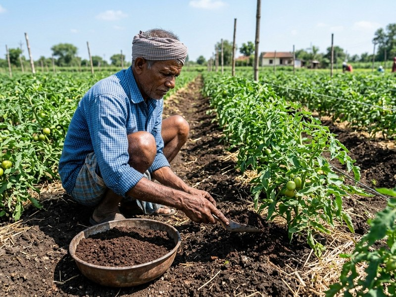
3. Vegetative Stage
Monitor crop growth and soil nutrition.
Side-dress with matured compost mulch. Buffers rhizosphere temperature during intense daytime heat and ensures sustained organic nitrogen uptake.
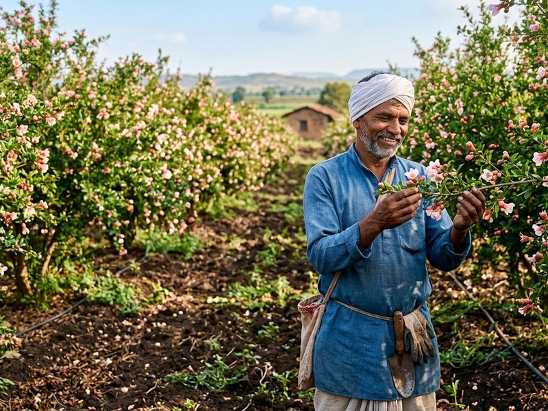
4. Pre-Harvest
Follow crop-specific nutrient management guidance.
Supplement with bio-potash and organic trace minerals to maximize grain weight, fruit brix levels, uniform skin coloration, and shelf stability.
Planning Organic Fertilizer for Large-Scale Cultivation?
Plan your organic manure requirements for farms, plantations, and agricultural operations. Contact our team for bulk quantity enquiries and wholesale quotations.
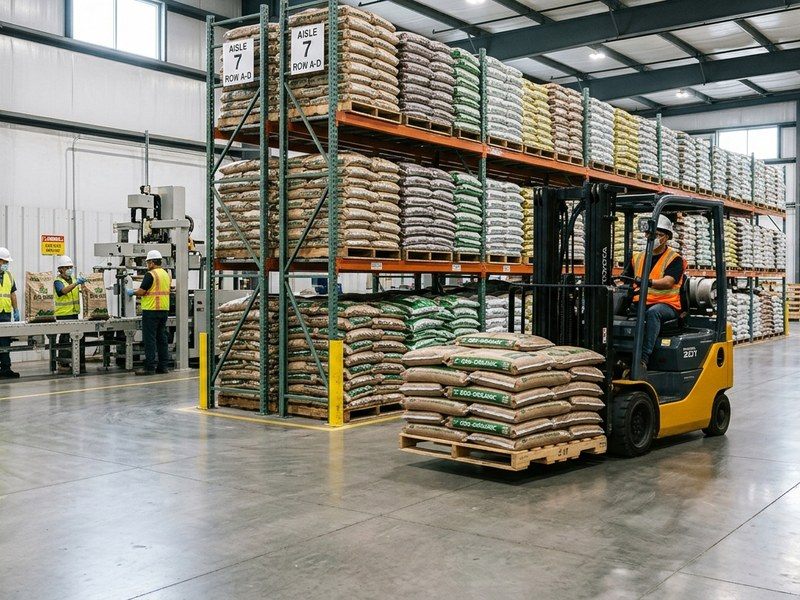
Frequently Asked Questions About Organic Fertilizers
Find answers to common questions about selecting, combining, and applying certified organic fertilizers for healthy crops.
Grow Better with Smarter Organic Farming.
Make informed fertilizer choices, plan your crop nutrition, and build healthier agricultural soil with TerraPure Organics.